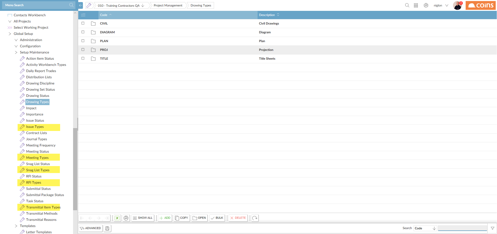

Several items have a type which is selected from a pre-defined list. There is a corresponding parameter to set the default type for all items.
Go to:
Create types for each of the above items.

|
Field |
Description |
|---|---|
| Code | A code to identify the drawing type. |
| Description | A description of the drawing type, such as Architectural, Landscape, Mechanical, etc. |
For each item, set the default type using the corresponding parameter.
Meeting types can be created with default items which are added to new meetings when they are created. The DEFMEET parameter should then be used to set the Default Meeting Type.